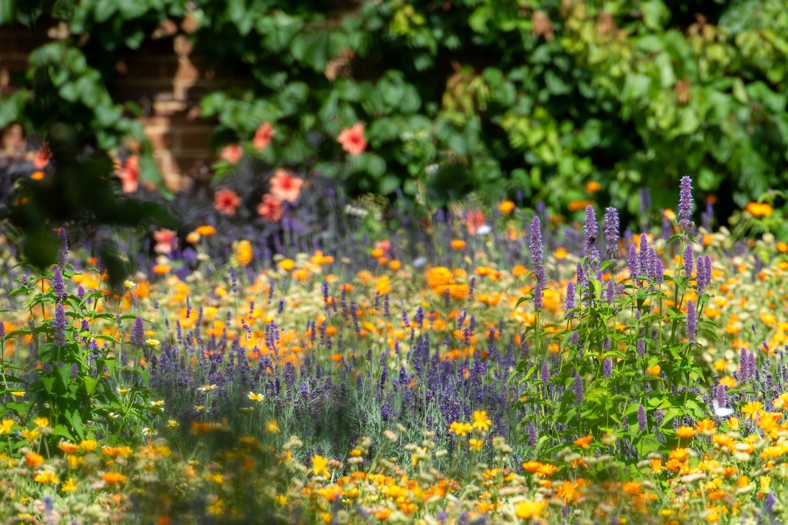
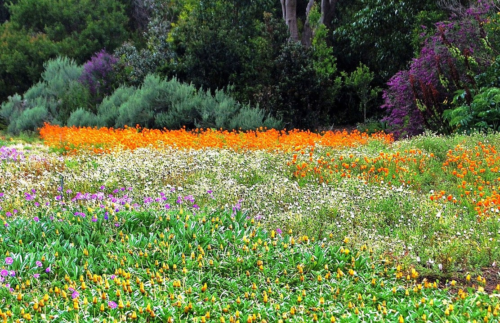

Roof Top Desiginng

Can be used to try out new crops and farming techniques, dry, process, and store farm products, and provide a comfortable environment for families. Home gardens can also contribute to safe waste management through composting, using wastewater, and providing a place for a latrine.
Japanese Garden

If you have ever enjoyed an afternoon in a Japanese public garden, you know that the experience feels transcendent. Koi ponds give way to carefully pruned cherry blossom trees or an outdoor bonsai garden. A simple walkway, shadowed by bamboo, encourages reflective silence. Every minute feels like a reset for the body and mind.
How to Have a Beautiful Garden in Full Sun

Spots that soak up sunshine from sunrise to sunset are prime candidates for gardens overflowing with color, flowers and tasty produce. But not all plants can stand up to direct, full sun. By understanding your garden's light levels and meeting the needs of sun-loving plants, you can enjoy a beautiful full-sun garden worthy of a gardener's dreams. Monastic gardens were often maintained outside of monasteries' walls and watered with complex irrigation systems. These gardens contained fruit trees, broadleaf vegetables, and vineyards to feed the monks and pilgrims.
Le Chateau du Lude
The lower garden running along the river, was the original vegetable garden. This was moved further away to create a romantic French-style garden designed by Edouard André a renowned landscaper in the 19th century.
Where are good examples of Ecological Gardens?
The lower garden running along the river, was the original vegetable garden. This was moved further away to create a romantic French-style garden designed by Edouard André a renowned landscaper in the 19th century.